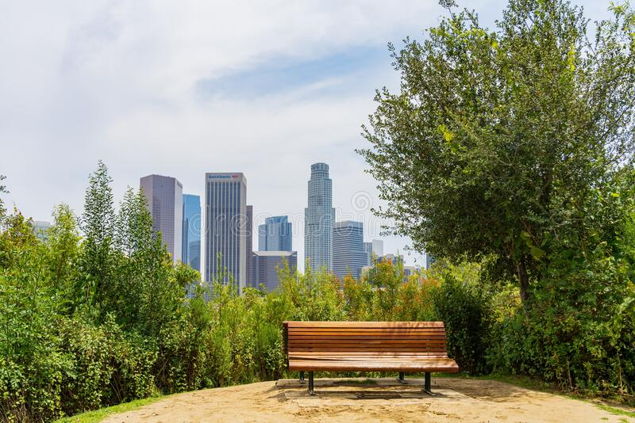
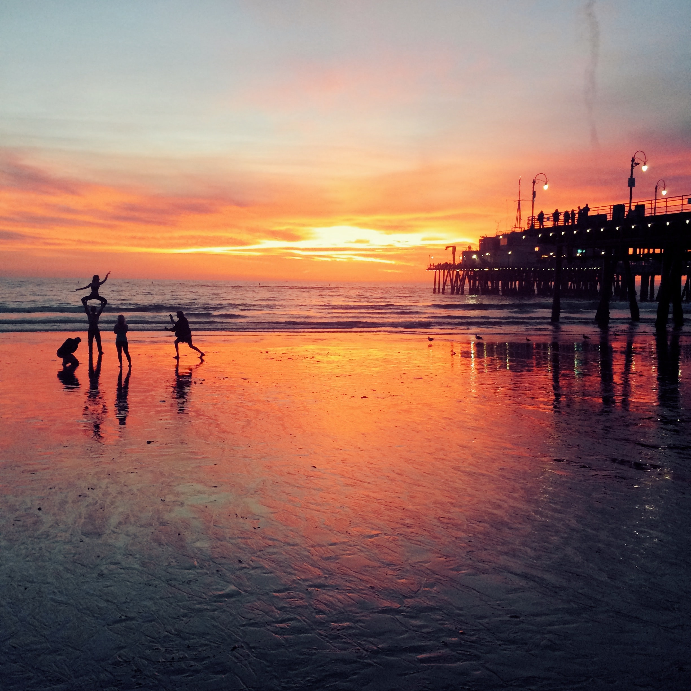
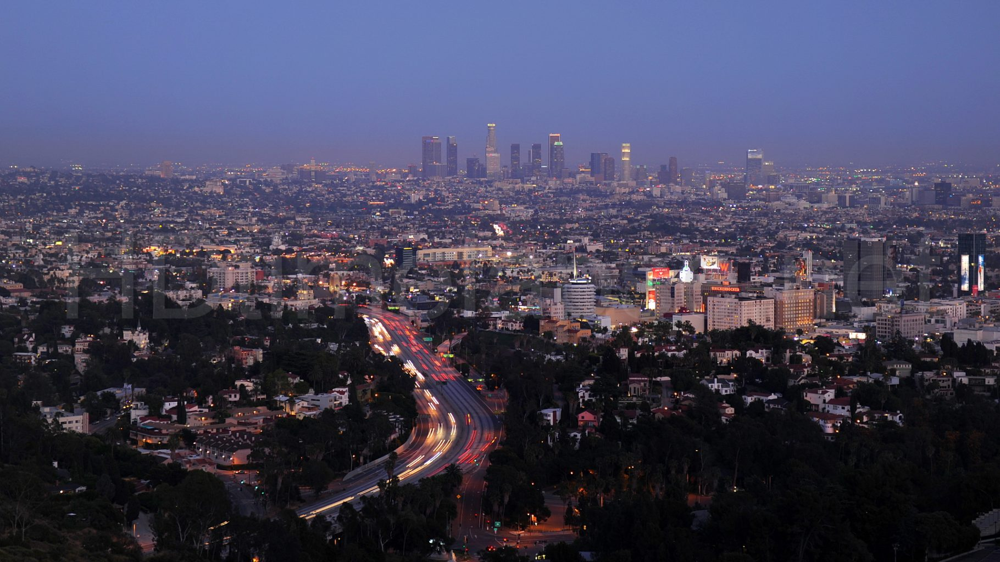
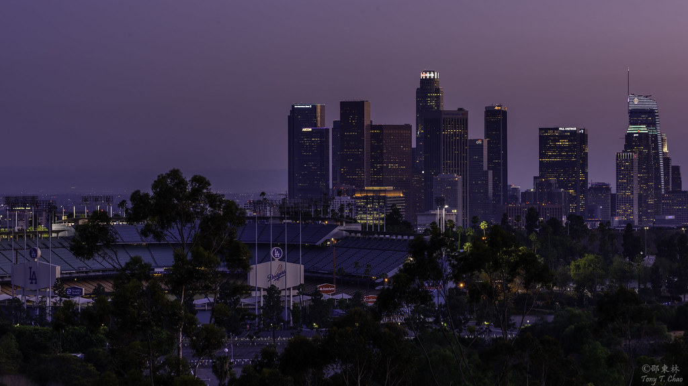

LA's Scenic Views
Griffith Observatory

Vista Hermosa Park
Santa Monica Pier
Mulholland Drive
Elysian Park/Angel's Point
The Griffith Observatory is home to one of the greatest, if not greatest, views in Los Angeles. Once on observatory grounds, one can see the beautiful view of Downtown Los Angeles, the Pacific Ocean and the HollyWood sign. This popular tourist attraction brings in over 1 million people every year making it the most popular observatory in the world. The hike up to the observatory is not for the faint of heart, but once at the top, the view is magnificent.
The Vista Hermosa Natural Park is a 10.5-acre park that has walking trails, picnic tables, and a beautiful scenic overlook of Downtown LA's skyscrapers. This gem is located in the heart of Downtown Los Angeles that opened just 15 years ago. This recreational park is one of the few recreational parks that you can find close to Downtown Los Angeles and it is a gem for sure.
Getting a scenic view in Los Angeles wouldn't be fulfilled without viewing a sunset at Santa Monica Beach. There is something about watching the sky turn a beautiful orange and red color and the sun setting in the horizon where the sky meets the ocean. This relaxing scenic view is a must for anyone wanting to see a sunset by the beach.
Mulholland Drive is a fifty-five mile long parkway that provides multiple stunning views of Los Angeles, the San Gabriel Mountains, Hollywood Bowl, and many more beautiful overlooks. The parkway features various locations where a driver can stop and enjoy the view, but there is a lot to look at driving down Mulholland Drive. It is a drive that everyone should experience to view scenes of valleys and cities.
In Elysian Park, there is a trail that leads to another beautiful view of Downtown Los Angeles and Dodger Stadium. At the end of the trail, the view from Angel's Point is the perfect view of Los Angeles and its sports culture. If the Dodgers are playing when at the peak of Angel's Point, chances are that you will hear the roar of Dodger fans.